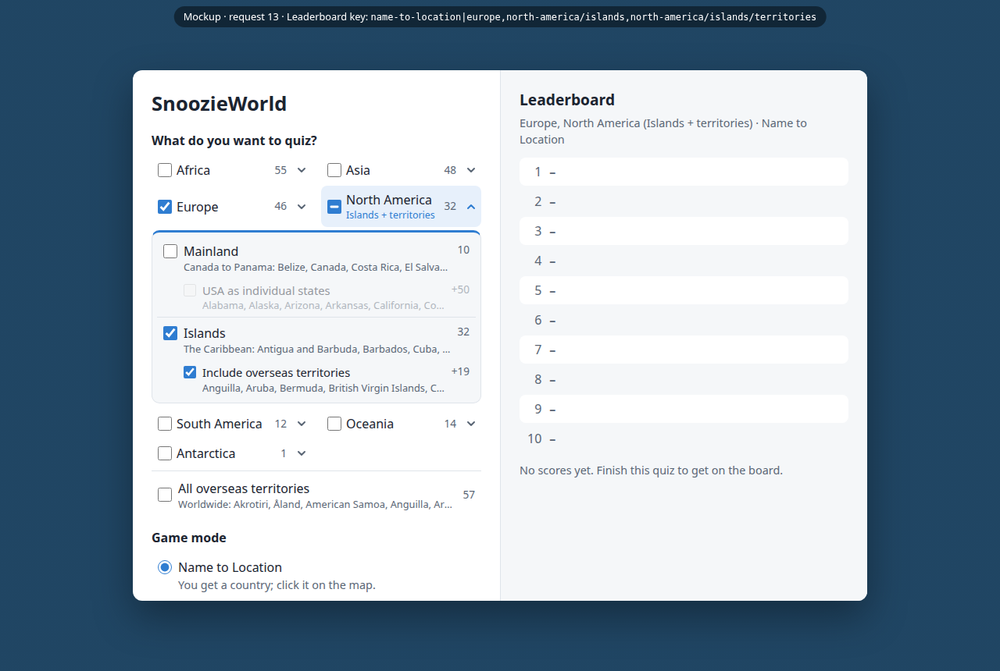
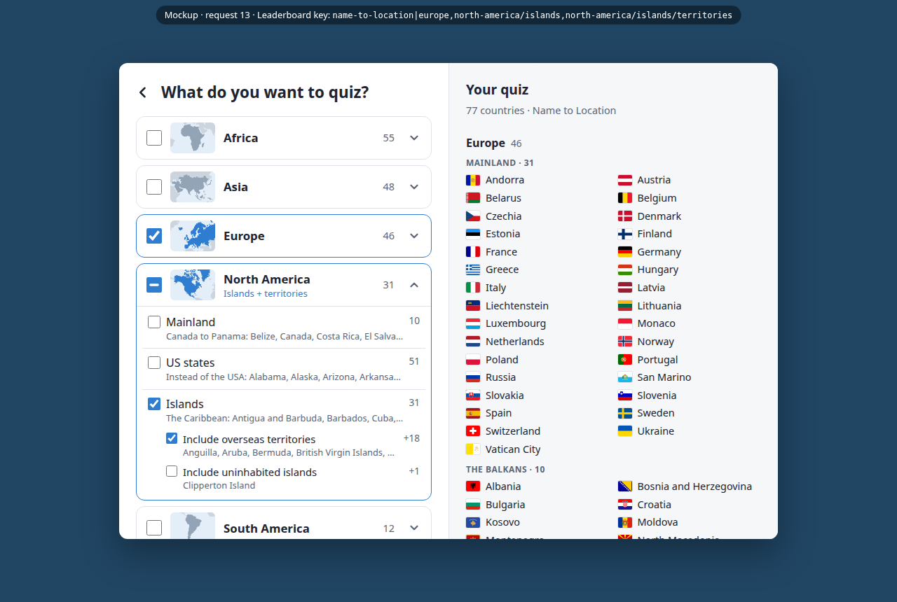
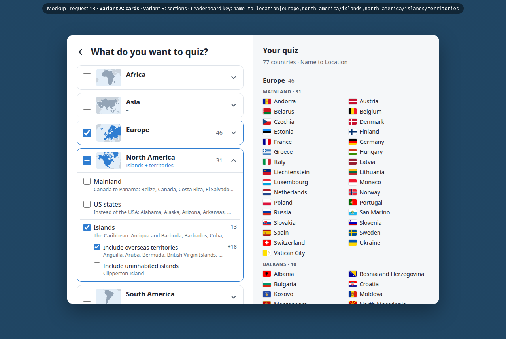
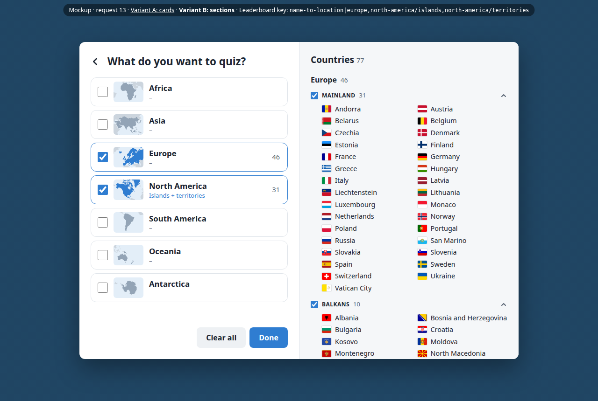

SnoozieWorld · Request 13 · 14 October 2026
From a six-line request to an agreed plan and mockup
A log of how the plan for request 13 (overseas territories as part of their continent) was made by Folkert with Claude Code: what Folkert asked for in each round, what changed, and who decided what. No app code was written yet; the result is a plan and a clickable mockup to build from.
The way of working
-
Folkert writes the request in their own words
Six lines in
docs/requests/13-modifications-to-continents.md, with examples (Saint Lucia is in North America but Guadeloupe isn't). The repository's docs (domain language, architecture) are the standing context. - Claude checks the request against the real data first Before any design: every territory listed with the continent the map data gives it, to find the problem cases.
- A functional plan, then a mockup that looks like the app The plan is a Markdown file in the repository. The mockup reuses the app's CSS and the real country data, so counts, flags and names are true, and it can be clicked through.
- Short feedback rounds Folkert reacts to what they see; Claude changes the mockup and the plan together, checks every change in a browser, and says where it disagrees.
- Commit the agreed plan Plan, mockups and this log are in the repository, next to the request, ready for building.
Round by round
-
1 · Which sets make sense?
12:18Folkert
Can you help me make the sets make sense? Where are some other possible problem cases?
Claude
- Listed all 57 overseas territories with the continent the map data gives them.
- Found problems: Akrotiri and Dhekelia (on Cyprus) were in Asia while Cyprus is in Europe; the US Minor Outlying Islands were in North America though nearly all are in the Pacific; four territories sat in "Antarctica", which had no checkbox; uninhabited specks like Clipperton Island would end up in continent quizzes.
- Flagged side effects: saved leaderboards would change meaning.
-
2 · Let the player decide: plan and first mockup
12:34Folkert
I think we should make this more up to the user than we previously did.
Each continent gets its own settings (Mainland, Islands, Include overseas territories, US states), and Antarctica becomes a continent. Asked for a plan, then a mockup that looks like the app.Claude
- Wrote the plan: Regions and options per continent, with counts.
- Designed the saved-score keys so that ticking just "Europe" stays the same quiz, so no leaderboard is lost.
- Built the first mockup and listed six open questions.

Mockup 1: the continents stay a grid on the Start Screen; an arrow opens a continent's regions. -
3 · A page of its own
≈12:45Folkert
- Remove "All overseas territories":
I don't think anyone would want to do a quiz with only that.
- Move the selection to its own split-screen page, bigger continent cards, and the list of chosen countries on the right.
- Answered the open questions: a second US states checkbox, separate options for uninhabited
islands, Balkans and Middle East as options, keep Antarctica. Asked:
Is there a general consensus?
on where far-off islands belong.
Claude
- Continents have no flags (only Europe's EU flag and Antarctica's), so it drew small maps of each continent from the map data instead.
- Disagreed on the US states: two checkboxes for one thing, one always greyed out. Proposed a single checkbox.
- Answered honestly: there is no consensus; the UN's list and the map data disagree on exactly these islands.
- Defined "uninhabited" as population 0: ten places.

Mockup 2: the Selection page, with continent cards on the left and the chosen countries on the right. - Remove "All overseas territories":
-
4 · Counts, labels, and a second variant
≈13:00Folkert
- US states single checkbox:
Yes, perfect, consistent.
Rule for far-off islands: the nearest continent. - Wanted to quiz only the Balkans or the Middle East:
especially for practise that makes sense.
- Spotted that North America showed 23 unticked and 41 once ticked:
That is odd.
Counts only for what is chosen; unticking and ticking again should reset to the default. - The label under a continent made the card jump; show "–" instead.
- Proposed a different design: tick continents on the left, customise them on the right.
Keep the current one too!
Claude
- Made the Balkans and the Middle East regions of their own, on by default.
- Fixed counts, reset and the label in variant A.
- Built variant B as a second page on shared code, so both run on the same data and can be compared side by side.

Variant A after the fixes: counts only on chosen continents, and a "–" line so cards don't jump. - US states single checkbox:
-
5 · Choosing variant B
≈13:20Folkert
Option B is great, yeah, lets go for this.
- Balkans: add Romania and Moldova, leave out Slovenia and Greece.
- Noticed the list flickered on every click: fine in a mockup, but to fix when building.
Claude
- Rewrote the plan around variant B; variant A kept for reference.
- Explained the flicker (the flags reload because the whole list is redrawn) and wrote the fix into the plan.
-
6 · Collapsing, order, and an exception
≈13:30Folkert
- Move US states below Islands: it's a long list that hides that Islands is on too.
- Collapse a section with an animation when switched off, with a manual way to open it again.
- South America should include its territories by default:
I know its strange and inconsistent, but I think it makes sense there.
Claude
- Built the collapsing; the list now updates in place, which also removed the flicker from the mockup.
- Pointed out the cost of the South America exception: old South America scores were set without territories, so they need a one-time move, and the plan says how.
-
7 · "Was there a good UX reason?"
≈13:40Folkert
- Asked why sections had switches and continents checkboxes:
Was there a good UX reason to do this?
- Remove the "Presets (later)" placeholder:
I don't want to promise this if I'm not 100% sure I'm going to deliver it.
- Simplify the list's header; no instructions needed.
Claude
- Admitted there wasn't one: both choose what is in the quiz, so by convention both should be checkboxes. Recommended changing it.
- Removed the presets placeholder; the header became "Countries 77".
- Asked why sections had switches and continents checkboxes:
-
8 · "I'm confused now"
≈13:45Folkert
French Guiana was crossed out in South America:
What is that about?
Claude
- Reproduced it before answering: the Flag modifier was on "Flag only", and French Guiana flies the French flag, so it can't be asked.
- Acknowledged the real problem: the reason was invisible on this page, partly because of the header line it had just removed.
-
9 · Grey versus crossed out
≈13:50Folkert
- Grey out what can't be asked; keep crossing out for the USA when it's replaced by its states,
where that makes way more sense.
A tooltip is enough. - Checkboxes for the sections; a thin line between continents; the empty text simply
Choose one or more continents to play.
Claude
Made the changes and checked them in a browser with "Flag only" on.
- Grey out what can't be asked; keep crossing out for the USA when it's replaced by its states,
-
10 · Polish and commit
14:04Folkert
Indent the countries under their section heading,
just easier on the eyes
, then commit.Claude
Indented them to line up with the section name and committed the plan and mockups. It also committed another agent's uncommitted work (request 14) separately, after checking that it type-checks.

The agreed design: tick continents on the left, tick or untick their sections on the right.
Who caught what
Folkert
- Product scope: drop the worldwide territories quiz; don't promise presets.
- Learning value: quizzing only the Balkans or the Middle East.
- Counts that changed meaning when ticked, and labels that made cards jump.
- Inconsistent controls (switches next to checkboxes).
- The flicker, and what crossing out should mean.
- Domain choices: Balkans membership, the South America exception.
- Layout details: US states hiding Islands, indenting for hierarchy.
Claude
- Data problems: territories on the wrong continent, and the missing Antarctica checkbox.
- Keeping existing leaderboards and practice progress working, and the one-time move the South America default needs.
- That continents have no flags, and an alternative from the map data.
- A simpler US states control, and the rule for far-off islands.
- Why French Guiana disappeared, and why that wasn't visible.
- Its own bugs, found by checking each change in a browser before reporting it.
Decisions
| Decision | From | Why |
|---|---|---|
| Territories also count as part of their continent | Folkert | Leaving Guadeloupe out next to Saint Lucia felt arbitrary (the request). |
| Choosing what to quiz moves to its own page, with the chosen countries listed | Folkert | More room than a grid on the Start Screen; you see exactly what you will get. |
| Variant B: continents on the left, sections ticked on the right | Folkert | The list itself is the control; picked after comparing both mockups. |
| A far-off territory belongs to the nearest continent | Both | No consensus exists; for a map quiz you look near where it is. Claude laid out the options, Folkert chose. |
| Akrotiri, Dhekelia → Europe; US Minor Outlying Islands → Oceania; South Georgia → South America | Claude | Found by checking the data; follows the nearest-continent rule. |
| One "US states" checkbox, not two | Both | Claude's counter-proposal to Folkert's idea; Folkert: "perfect, consistent". |
| Balkans and Middle East as regions of their own | Folkert | So they can be practised on their own. |
| Uninhabited islands as their own section | Both | Folkert asked for it; Claude defined it (population 0). |
| South America includes its territories by default | Folkert | They feel part of it; Claude added how old scores carry over. |
| Small continent maps instead of flags | Claude | Only Europe and Antarctica have a flag. |
| Today's quizzes and leaderboards keep working | Claude | A continent at its default keeps the same saved-score key as now. |
| Checkboxes everywhere; grey for "can't be asked", crossed out only for the replaced USA | Folkert | Consistency, and each look means one thing. |
| No presets in the design or plan | Folkert | Don't promise what may not be delivered. |
What came out of it
- The plan 188 lines: concepts, every continent's sections with counts, the continent of each far-off territory, how saved scores carry over, and the implementation steps.
- Mockup, variant B (agreed) Clickable, on the real data. Open it from inside the repository so the flags load.
- Mockup, variant A (for reference) The design before variant B.
- The original request Six lines, as Folkert wrote them; never edited by the agent.